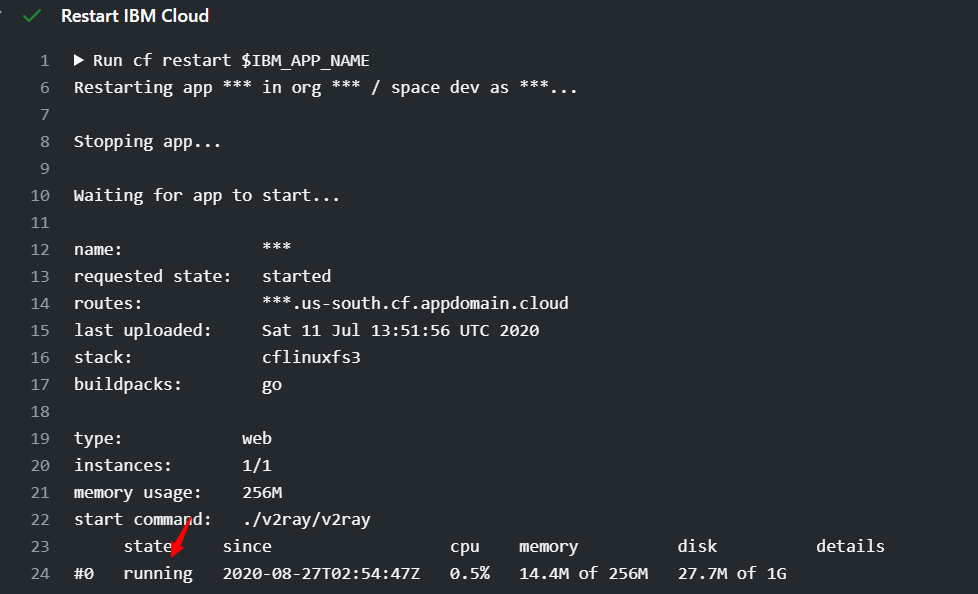

本文简单介绍了Github Action的用法，并使用Gihub Action定时重启IBM
cloud foundry容器。
摘要：GitHub
Actions是GitHub自家的持续集成及自动化工作流服务，它使用起来非常简单，只要在你的仓库根目录建立.github/workflows文件夹，将你的工作流配置(YML文件)放到这个目录下，就能启用GitHub
Actions服务。
关键字：Github Action，IBM cloud foundry
yml配置文件
1
2
3
4
5
6
7
8
9
10
11
12
13
14
15
16
17
18
19
20
21
22
23
24
25
26
27
28
29
30
31
32
33
34
35
36
37
38
39
| name: IBM Cloud Auto Restart
on:
push:
branches: [ master ]
pull_request:
branches: [ master ]
schedule:
- cron: '0 0 * * *'
jobs:
ibm-cloud-restart:
runs-on: ubuntu-latest
steps:
- uses: actions/checkout@v2
- name: Init
run: |
wget -q -O - https://packages.cloudfoundry.org/debian/cli.cloudfoundry.org.key | sudo apt-key add -
echo "deb https://packages.cloudfoundry.org/debian stable main" | sudo tee /etc/apt/sources.list.d/cloudfoundry-cli.list
sudo apt-get update
sudo apt-get install cf-cli
- name: Login IBM Cloud
env:
IBM_ACCOUNT: ${{ secrets.IBM_ACCOUNT }}
IBM_PASSWORD: ${{ secrets.IBM_PASSWORD }}
run: |
cf login -a https://api.us-south.cf.cloud.ibm.com -u $IBM_ACCOUNT << EOF
$IBM_PASSWORD
EOF
- name: Get IBM Cloud Apps
run: |
cf a
- name: Restart IBM Cloud
env:
IBM_APP_NAME: ${{ secrets.IBM_APP_NAME }}
run: |
cf restart $IBM_APP_NAME
|
使用方法
fork仓库：https://github.com/wf09/IBMWorkflow
设置环境变量
1
2
3
4
5
| IBM_ACCOUNT：账户邮箱
IBM_APP_NAME：app的名字
IBM_PASSWORD：密码
|
设置完环境变量以后记得commit一下yml文件触发Action。
效果图

PS：达拉斯的容器测试通过，其他的地区可能需要将https://api.us-south.cf.cloud.ibm.com修改成你所在的地区。